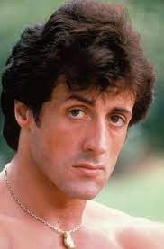
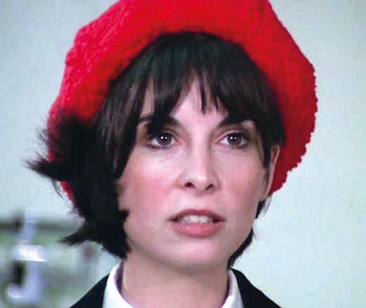
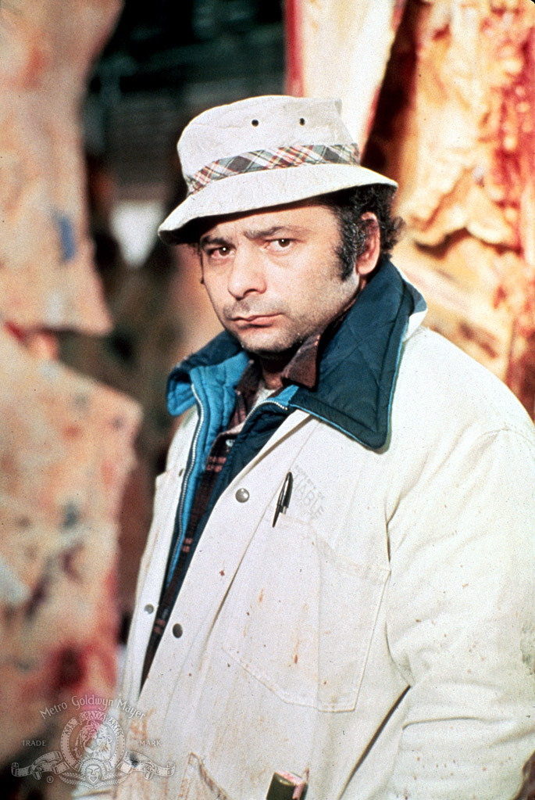
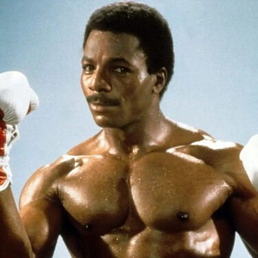
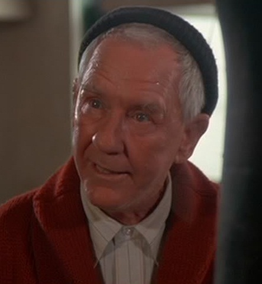

Reparto

Un boxeador humilde y soñador, que se enfrentara contra Apollo Creed un boxeado consagrado en el ambito.

Ella es la tímida novia de Rocky que lo apoya incondicionalmente a pesar de las dificultades que atraviesa.

Hermano de Adrian y amigo de Rocky, se caracteriza por ser una persona gruñona, pero muy leal.

Es el carismático campeón mundial de pesos pesados y además el antagonista de Rocky Balboa.

Es el viejo entrenador de Rocky, al principio tiene una relación distante con él porque lo culpa de ser un fracasado.